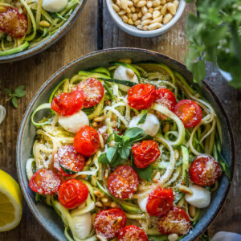
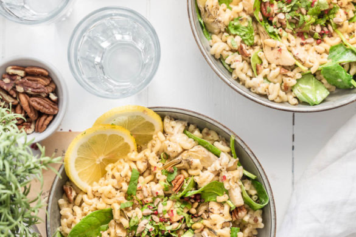

Cuisine moi un mouton
440 recettes sauvegardées du blog original (2014-2019)
Explorer par catégorie
Dernières recettes
 3 avis
3 avis
Recettes VégétariennesSaléSandwiches
Sandwich végétarien au chou fleur façon chawarma
 6 avis
6 avis
PizzasSalé
Pizza-focaccia aux asperges, tomates et Tomme de Savoie IGP
 1 avis
1 avis
ApéritifBoissons
Lillet Tonic {cocktail}
 1 avis
1 avis
Recettes VégétariennesSucré
Cookies crème de sésame et pépites de chocolat {sans beurre ni œufs}

3 avisPâtes et GnocchisSalé
Spaghettis de courgettes
 11 avis
11 avis
Sucré
Gaufres liégeoises
 7 avis
7 avis
Recettes VégétariennesSucré
Gâteau au chocolat à l’huile d’olive
 5 avis
5 avis
Sucré
Roses des sables {chocolat au lait noix de coco}
 5 avis
5 avis
Recettes VégétariennesRepas du mondeSalade
Bo bun végétarien
 3 avis
3 avis
Collab Grand Frais®Recettes VégétariennesSucré
Ananas rôtis

2 avisPâtes et GnocchisSalé
Coquillettes aux épinards, brie, citron et artichauts
1 avis
PizzasSalé
Pizza saumon épinards
Les plus populaires
 167 avis
167 avis
CupcakesCupcakes, cake pops & coSucré
Cupcake Kinder Bueno
 165 avis
165 avis
Gâteaux et Layer cakesSucré
Rainbow Cake
 114 avis
114 avis
Gâteaux et Layer cakesSucré
Napolitain maison
 106 avis
106 avis
CupcakesIngrédients & coSucré
Réussir sa crème au beurre à la meringue Suisse :
 100 avis
100 avis
BrunchSucré
Pâte à tartiner de Christophe Michalak
 99 avis
99 avis
Desserts du mondeSucré